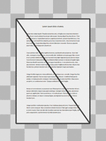

Fullscreen mode
Just press »F« on your keyboard to show your presentation in fullscreen mode. Press the »ESC« key to exit fullscreen mode.
Overview mode
Press "Esc" or "o" keys to toggle the overview mode on and off. While you're in this mode, you can still navigate between slides, as if you were at 1,000 feet above your presentation.
OpenGL
Lesson 2
Author: Egoshkin Danila Igorevich

Context-Renderer (and also Scene, Mesh, Camera in future)
3 OOP
Arch - Architecture
E:\Learn It\GAMES-Programming\Engine\MyEngine\CORE_SimpleCore


Windows
Adapter (Wrapper)
Composition vs Aggregation in UML
Composition
Aggregation
Adapter vs Facade vs Proxy
FlyWeight


Triangles

Face culling
Clockwise and counter-clockwise

The direction of the loop is such that the face is locally on the left of
the loop, when seen from above the face and looking in the directi
on of the loop.
Face culling
Clockwise and counter-clockwise

Face culling
Clockwise and counter-clockwise
"Once we know we have an edge, we need to create the geometry.
We do this by creating fins to show the direction of face culling for the correct normal vector making"
Face culling
Clockwise and counter-clockwise
Face culling
Clockwise and counter-clockwise
VBO - Vertex Buffer Object


Why Box?


VBO In Games
TES5 - Skyrim (2011)
Crowd-Simulation - Game of Thrones (2019)
Crowd-Simulation

Sims 4 - Pigeons (2013)
Sims 4 - Pigeons (2013)
Cyberpunk 2077 - Far distant Cars (2020)
TOR
E:\Learn It\GreatWork\GraphicProjects_OpenGL_Shaders_GLSL\temp\LabsOpenGL\Lab1.docx
E:\Learn It\GAMES-Programming\Engine\Engines\Doom\DOOM-3-master.zip